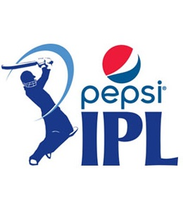
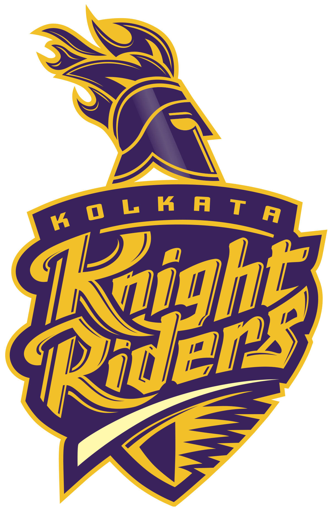
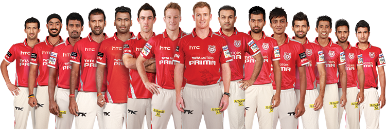

Pepsi IPL 2014

*Winner: Kolkata Knight Riders

*Team Squad: (Captain - Gautam Gamnhir)
(Click the above pic for viewing the Highlights of the IPL Final 2010)
Gautam Gambhir, Sunil Narine, Jacques Kallis, Robin Uthappa, Yusuf Pathan, Shakib Al Hasan, Umesh Yadav, Vinay Kumar, Morne Morkel, Piyush Chawla, Manish Pandey, Suryakumar Yadav,
Manvinder Bisla, Ryan ten Doeschate, Kuldeep Yadav, Veer Pratap Singh, Chris Lynn, Andre Russell, Sayan Mondal, Pat Cummins, Debabrata Das
*Runner ups: Kings XI Punjab
*Team Squad: (Captain - George Bailey)

George Bailey, Manan Vohra, David Miller, Virender Sehwag, Mitchell Johnson, Cheteshwar Pujara, Shaun Marsh, Wriddhiman Saha, Thisara Perera, Glenn Maxwell, Lakshmipathy Balaji,
Parvinder Awana, Gurkeerat Singh Mann, Mandeep Singh, Rishi Dhawan, Anureet Singh, Sandeep Sharma, Axar Patel, Beuran Hendricks, Karanveer Singh, Murali Kartik, Shivam Sharma,
Shardul Thakur
*Orange Cap Winner: Robin Uthappa(IND) : 16 Matches 660 Runs - Kolkata Knight Riders
*Purple Cap Winner: Mohit Sharma(IND) : 16 Matches 23 Wickets - Chennai Super Kings
*Player of the Series: Glen Maxwell - Kings XI Punjab